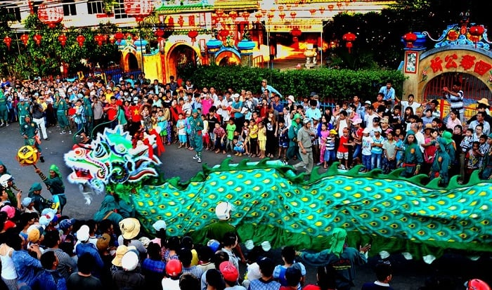
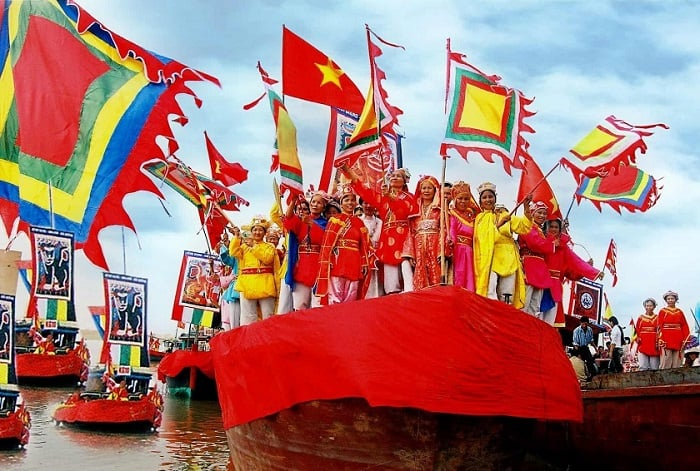
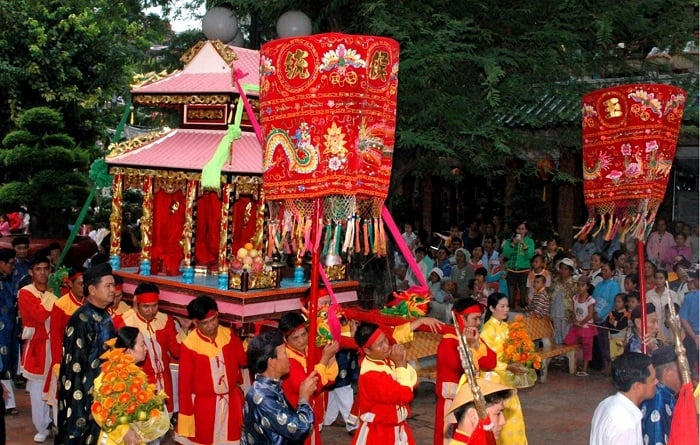
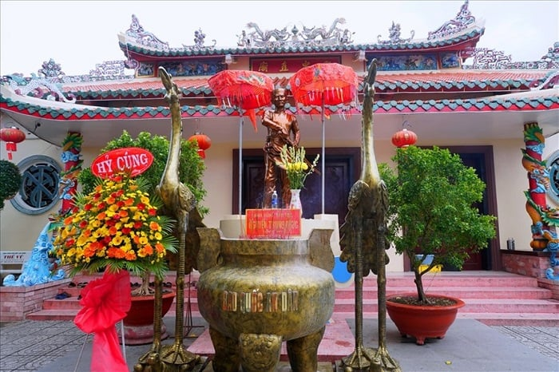
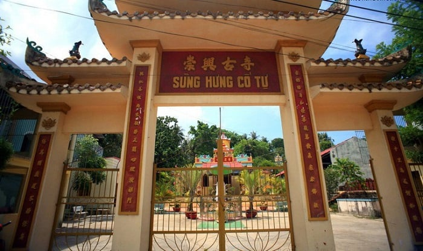
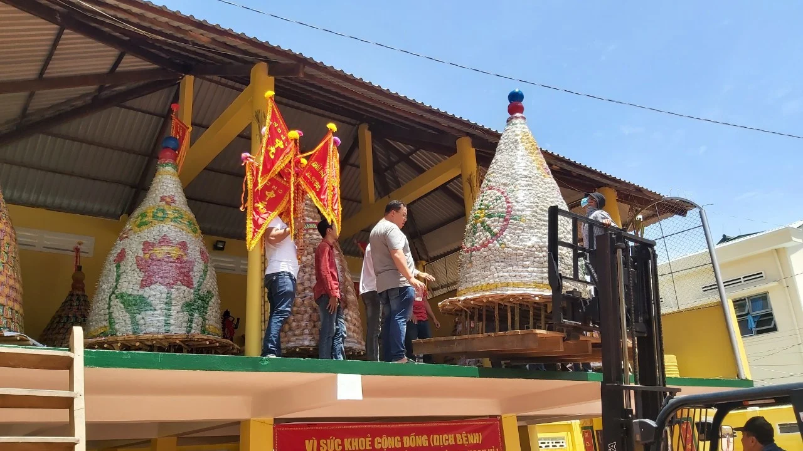
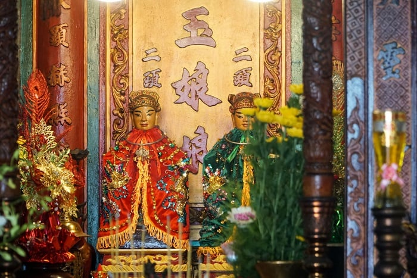
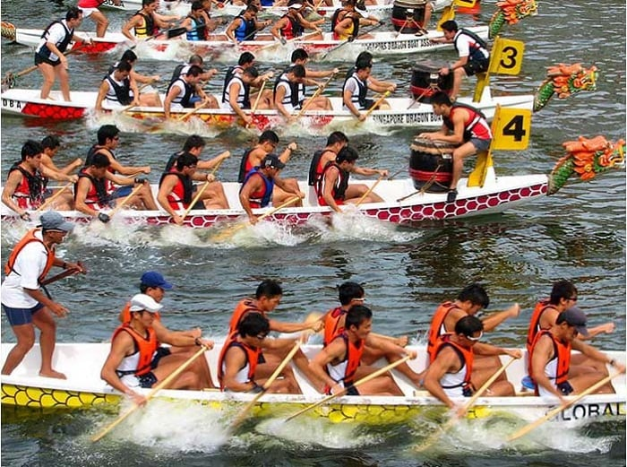

Thông tin về các lễ hội ở Phú Quốc
Các lễ hội ở Phú Quốc đậm nét truyền thống, văn hóa là một yếu tố quan trọng góp phần tạo nên sự hấp dẫn của du lịch đảo ngọc:
Ngoài phong cảnh đẹp, nét văn hóa độc đáo tại các lễ hội ở Phú Quốc là yếu tố quan trọng giúp du lịch đảo ngọc phát triển, thu hút đông đảo du khách. Sau đây là những lễ hội Phú Quốc độc đáo, đặc sắc nhất:
1. Lễ hội Nghinh Ông:
Lễ hội ở Phú Quốc đặc sắc này được tổ chức vào khoảng thời gian từ 15/8-16/8 âm lịch, phổ biến từ đèo Ngang trở vào cho đến Hà Tiên. Lễ hội Nghinh Ông do các ngư dân thực hiện với ý nghĩa cầu mong mưa thuận gió hòa, sóng yên biển lặng, cho ngư dân gặp nhiều may mắn, có cuộc sống ấm no hạnh phúc. Nghi thức lễ Nghinh Ông gồm 2 phần: lễ rước và lễ tế. 
Lễ hội Nghinh Ông Phú Quốc là dịp để để tưởng nhớ, thờ cúng cá Ông, sinh vật thiêng liêng của biển cả (Ảnh: Sưu tầm)
2. Lễ hội Dinh Bà Ông Lang
Lễ hội ở Phú Quốc đậm nét truyền thống này là dịp để tưởng nhớ tới vợ của anh hùng dân tộc Nguyễn Trung Trực với nhiều hoạt động đặc sắc. Lễ hội ở Phú Quốc cầu mong một năm may mắn, thuận lợi, các đôi lứa cầu được bên nhau mãi mãi.
Lễ hội Dinh Bà Ông Lang được tổ chức vào khoảng thời gian từ 18/1-19/1 âm lịch hàng năm tại Dinh Bà Phú Quốc ở cách thị trấn Dương Đông khoảng 7km (Ảnh: Sưu tầm)
3. Lễ hội Nguyễn Trung Trực
Lễ hội Nguyễn Trung Trực diễn ra vào ngày 27/8 âm lịch hàng năm, tổ chức tại xã Gành Dầu, Phú Quốc. Lễ hội Phú Quốc này có nhiều hoạt động đặc sắc, đậm nét văn hóa của người dân Phú Quốc.
Trong khuôn viên đền thờ Nguyễn Trung Trực ở Phú Quốc sẽ diễn ra 2 phần chính là lễ và hội, ở phần lễ sẽ thực hiện theo những nghi thức truyền thống, còn phần hội là những hoạt động dân gian. (Nguồn ảnh: Báo Lao động) Tất cả hoạt động lễ hội đều xoay quanh vị anh hùng với nhiều công lao trong cuộc đấu tranh của dân tộc.
4. Lễ hội Trai Đàn Sùng Hưng Cổ Tự
Lễ hội Trai Đàn Sùng Hưng Cổ Tự là một trong những lễ hội ở Phú Quốc đặc sắc, diễn ra vào ngày 30/7 âm lịch hàng năm, tại chùa Sùng Hưng gần Dinh Cậu. Chùa Sùng Hưng được xây dựng theo phong cách dân gian với nhiều khu thờ cúng, trong thời gian diễn ra lễ hội Trai Đàn Sùng Hưng Cổ Tự tại đây, du khách có thể được khám phá nhiều nghi thức như Công Phu, Thỉnh Tiêu Diện Thượng Giàn, Động Đàn…
5. Lễ hội Đình Thần Dương Đông
Vào khoảng thời gian từ 10/1-11/1 âm lịch hàng năm sẽ diễn ra lễ hội Đình Thần Dương Đông, đây là nét văn hóa không thể thiếu của người dân Phú Quốc, thu hút đông đảo du khách. Lễ hội được tổ chức tại Đình Thần Dương Đông, có địa chỉ trên đường 30/4, khu phố 1, thị trấn Dương Đông, Phú Quốc. Lễ hội Phú Quốc Đình Thần Dương Đông được tổ chức để tưởng nhớ những người đã có công khai khẩn, lập xóm làng. Đến tham dự lễ hội, du khách có thể tham gia các hoạt động vui chơi giải trí, thưởng thức nhiều món ăn ngon.
6. Lễ hội Dinh Cậu
Lễ hội Dinh Cậu còn có tên gọi khác là lễ cúng kỳ yên Dinh Cậu, diễn ra vào ngày 15/10 – 16/10 âm lịch hàng năm ngay tại khuôn viên đền Dinh Cậu Phú Quốc, tại khu phố 2, thị trấn Dương Đông, Phú Quốc.
7. Lễ hội đua thuyền truyền thống
Đến với Phú Quốc vào dịp 30/4 hàng năm, du khách sẽ có dịp tham gia vào lễ hội đua thuyền sôi động, thú vị ở đây. Lễ hội đua thuyền truyền thống này được tổ chức tại bãi biển Dinh Cậu với những màn thi đấu náo nhiệt bậc nhất.
Hội đua là nét đẹp văn hóa đáng trân trọng, là dịp để người dân Phú Quốc. (Nguồn ảnh: Sưu tầm) Du khách đến lễ hội có thể hòa mình vào các hoạt động vui chơi văn hoá độc đáo, đặc sắc.